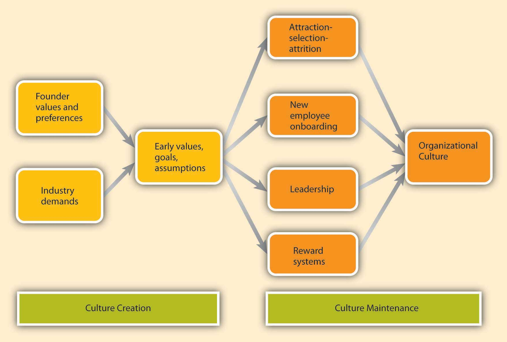
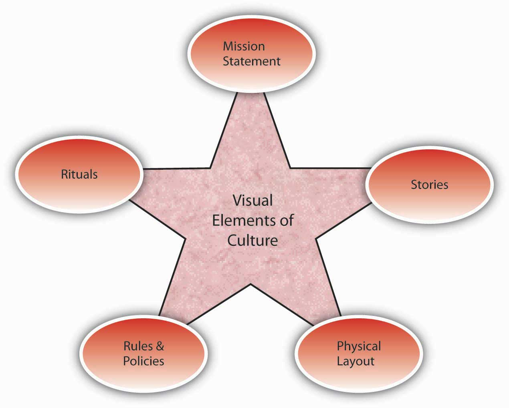

After reading this chapter, you should be able to do the following:
Just like individuals, you can think of organizations as having their own personalities, more typically known as organizational cultures. The opening case illustrates that Nordstrom is a retailer with the foremost value of making customers happy. At Nordstrom, when a customer is unhappy, employees are expected to identify what would make the person satisfied, and then act on it, without necessarily checking with a superior or consulting a lengthy policy book. If they do not, they receive peer pressure and may be made to feel that they let the company down. In other words, this organization seems to have successfully created a service culture. Understanding how culture is created, communicated, and changed will help you be more effective in your organizational life. But first, let’s define organizational culture.
Nordstrom Inc. (NYSE: JWN) is a Seattle-based department store rivaling the likes of Saks Fifth Avenue, Neiman Marcus, and Bloomingdale’s. Nordstrom is a Hall of Fame member of Fortune magazine’s “100 Best Companies to Work For” list, including being ranked 34th in 2008. Nordstrom is known for its quality apparel, upscale environment, and generous employee rewards. However, what Nordstrom is most famous for is its delivery of customer service above and beyond the norms of the retail industry. Stories about Nordstrom service abound. For example, according to one story the company confirms, in 1975 Nordstrom moved into a new location that had formerly been a tire store. A customer brought a set of tires into the store to return them. Without a word about the mix-up, the tires were accepted, and the customer was fully refunded the purchase price. In a different story, a customer tried on several pairs of shoes but failed to find the right combination of size and color. As she was about to leave, the clerk called other Nordstrom stores but could only locate the right pair at Macy’s, a nearby competitor. The clerk had Macy’s ship the shoes to the customer’s home at Nordstrom’s expense. In a third story, a customer describes wandering into a Portland, Oregon, Nordstrom looking for an Armani tuxedo for his daughter’s wedding. The sales associate took his measurements just in case one was found. The next day, the customer got a phone call, informing him that the tux was available. When pressed, she revealed that using her connections she found one in New York, had it put on a truck destined to Chicago, and dispatched someone to meet the truck in Chicago at a rest stop. The next day she shipped the tux to the customer’s address, and the customer found that the tux had already been altered for his measurements and was ready to wear. What is even more impressive about this story is that Nordstrom does not sell Armani tuxedos.
How does Nordstrom persist in creating these stories? If you guessed that they have a large number of rules and regulations designed to emphasize quality in customer service, you’d be wrong. In fact, the company gives employees a 5½-inch by 7½-inch card as the employee handbook. On one side of the card, the company welcomes employees to Nordstrom and states that their number one goal is to provide outstanding customer service, and for this they have only one rule. On the other side of the card, the single rule is stated: “Use good judgment in all situations.” By leaving it in the hands of Nordstrom associates, the company seems to have empowered employees who deliver customer service heroics every day.
Case written by [citation redacted per publisher request]. Based on information from Chatman, J. A., & Eunyoung Cha, S. (2003). Leading by leveraging culture. California Management Review, 45, 19–34; McCarthy, P. D., & Spector, R. (2005). The Nordstrom way to customer service excellence: A handbook for implementing great service in your organization. Hoboken, NJ: John Wiley; Pfeffer, J. (2005). Producing sustainable competitive advantage through the effective management of people. Academy of Management Executive, 19, 95–106.
Organizational cultureA system of shared assumptions, values, and beliefs showing people what is appropriate and inappropriate behavior. refers to a system of shared assumptions, values, and beliefs that show employees what is appropriate and inappropriate behavior.Chatman, J. A., & Eunyoung Cha, S. (2003). Leading by leveraging culture. California Management Review, 45, 19–34; Kerr, J., & Slocum, J. W., Jr. (2005). Managing corporate culture through reward systems. Academy of Management Executive, 19, 130–138. These values have a strong influence on employee behavior as well as organizational performance. In fact, the term organizational culture was made popular in the 1980s when Peters and Waterman’s best-selling book In Search of Excellence made the argument that company success could be attributed to an organizational culture that was decisive, customer oriented, empowering, and people oriented. Since then, organizational culture has become the subject of numerous research studies, books, and articles. However, organizational culture is still a relatively new concept. In contrast to a topic such as leadership, which has a history spanning several centuries, organizational culture is a young but fast-growing area within organizational behavior.
Culture is by and large invisible to individuals. Even though it affects all employee behaviors, thinking, and behavioral patterns, individuals tend to become more aware of their organization’s culture when they have the opportunity to compare it to other organizations. If you have worked in multiple organizations, you can attest to this. Maybe the first organization you worked was a place where employees dressed formally. It was completely inappropriate to question your boss in a meeting; such behaviors would only be acceptable in private. It was important to check your e-mail at night as well as during weekends or else you would face questions on Monday about where you were and whether you were sick. Contrast this company to a second organization where employees dress more casually. You are encouraged to raise issues and question your boss or peers, even in front of clients. What is more important is not to maintain impressions but to arrive at the best solution to any problem. It is widely known that family life is very important, so it is acceptable to leave work a bit early to go to a family event. Additionally, you are not expected to do work at night or over the weekends unless there is a deadline. These two hypothetical organizations illustrate that organizations have different cultures, and culture dictates what is right and what is acceptable behavior as well as what is wrong and unacceptable.
An organization’s culture may be one of its strongest assets, as well as its biggest liability. In fact, it has been argued that organizations that have a rare and hard-to-imitate organizational culture benefit from it as a competitive advantage.Barney, J. B. (1986). Organizational culture: Can it be a source of sustained competitive advantage? Academy of Management Review, 11, 656–665. In a survey conducted by the management consulting firm Bain & Company in 2007, worldwide business leaders identified corporate culture as important as corporate strategy for business success.Why culture can mean life or death for your organization. (2007, September). HR Focus, 84, 9. This comes as no surprise to many leaders of successful businesses, who are quick to attribute their company’s success to their organization’s culture.
Culture, or shared values within the organization, may be related to increased performance. Researchers found a relationship between organizational cultures and company performance, with respect to success indicators such as revenues, sales volume, market share, and stock prices.Kotter, J. P., & Heskett, J. L. (1992). Corporate culture and performance. New York: Free Press; Marcoulides, G. A., & Heck, R. H. (1993, May). Organizational culture and performance: Proposing and testing a model. Organizational Science, 4, 209–225. At the same time, it is important to have a culture that fits with the demands of the company’s environment. To the extent shared values are proper for the company in question, company performance may benefit from culture.Arogyaswamy, B., & Byles, C. H. (1987). Organizational culture: Internal and external fits. Journal of Management, 13, 647–658. For example, if a company is in the high-tech industry, having a culture that encourages innovativeness and adaptability will support its performance. However, if a company in the same industry has a culture characterized by stability, a high respect for tradition, and a strong preference for upholding rules and procedures, the company may suffer as a result of its culture. In other words, just as having the “right” culture may be a competitive advantage for an organization, having the “wrong” culture may lead to performance difficulties, may be responsible for organizational failure, and may act as a barrier preventing the company from changing and taking risks.
In addition to having implications for organizational performance, organizational culture is an effective control mechanism for dictating employee behavior. Culture is in fact a more powerful way of controlling and managing employee behaviors than organizational rules and regulations. When problems are unique, rules tend to be less helpful. Instead, creating a culture of customer service achieves the same result by encouraging employees to think like customers, knowing that the company priorities in this case are clear: Keeping the customer happy is preferable to other concerns such as saving the cost of a refund.
Organizational culture consists of some aspects that are relatively more visible, as well as aspects that may lie below one’s conscious awareness. Organizational culture can be thought of as consisting of three interrelated levels.Schein, E. H. (1992). Organizational culture and leadership. San Francisco: Jossey-Bass.
Figure 15.3

Organizational culture consists of three levels.
Source: Adapted from Schein, E. H. (1992). Organizational culture and leadership. San Francisco: Jossey-Bass.
At the deepest level, below our awareness lie basic assumptionsTaken for granted beliefs about human nature and reality.. Assumptions are taken for granted, and they reflect beliefs about human nature and reality. At the second level, valuesShared principles, standards, and goals. exist. Values are shared principles, standards, and goals. Finally, at the surface we have artifactsThe visible and tangible elements of culture., or visible, tangible aspects of organizational culture. For example, in an organization one of the basic assumptions employees and managers share might be that happy employees benefit their organizations. This assumption could translate into values such as social equality, high quality relationships, and having fun. The artifacts reflecting such values might be an executive “open door” policy, an office layout that includes open spaces and gathering areas equipped with pool tables, and frequent company picnics in the workplace. For example, Alcoa Inc. designed their headquarters to reflect the values of making people more visible and accessible, and to promote collaboration.Stegmeier, D. (2008). Innovations in office design: The critical influence approach to effective work environments. Hoboken, NJ: John Wiley. In other words, understanding the organization’s culture may start from observing its artifacts: the physical environment, employee interactions, company policies, reward systems, and other observable characteristics. When you are interviewing for a position, observing the physical environment, how people dress, where they relax, and how they talk to others is definitely a good start to understanding the company’s culture. However, simply looking at these tangible aspects is unlikely to give a full picture of the organization. An important chunk of what makes up culture exists below one’s degree of awareness. The values and, at a deeper level, the assumptions that shape the organization’s culture can be uncovered by observing how employees interact and the choices they make, as well as by inquiring about their beliefs and perceptions regarding what is right and appropriate behavior.
Organizational culture is a system of shared assumptions, values, and beliefs that help individuals within an organization understand which behaviors are and are not appropriate within an organization. Cultures can be a source of competitive advantage for organizations. Strong organizational cultures can be an organizing as well as a controlling mechanism for organizations. And finally, organizational culture consists of three levels: assumptions, which are below the surface, values, and artifacts.
Which values characterize an organization’s culture? Even though culture may not be immediately observable, identifying a set of values that might be used to describe an organization’s culture helps us identify, measure, and manage culture more effectively. For this purpose, several researchers have proposed various culture typologies. One typology that has received a lot of research attention is the organizational culture profile (OCP), in which culture is represented by seven distinct values.Chatman, J. A., & Jehn, K. A. (1991). Assessing the relationship between industry characteristics and organizational culture: How different can you be? Academy of Management Journal, 37, 522–553; O’Reilly, C. A., III, Chatman, J. A., & Caldwell, D. F. (1991). People and organizational culture: A profile comparison approach to assessing person-organization fit. Academy of Management Journal, 34, 487–516. We will describe the OCP as well as two additional dimensions of organizational culture that are not represented in that framework but are important dimensions to consider: service culture and safety culture.
Figure 15.4 Dimensions of Organizational Culture Profile (OCP)

Source: Adapted from information in O’Reilly, C. A., III, Chatman, J. A., & Caldwell, D. F. (1991). People and organizational culture: A profile comparison approach to assessing person-organization fit. Academy of Management Journal, 34, 487–516.
According to the OCP framework, companies that have innovative culturesCultures that are flexible, adaptable, and experiment with new ideas. are flexible and adaptable, and experiment with new ideas. These companies are characterized by a flat hierarchy in which titles and other status distinctions tend to be downplayed. For example, W. L. Gore & Associates Inc. is a company with innovative products such as GORE-TEX® (the breathable fabric that is windproof and waterproof), Glide dental floss, and Elixir guitar strings, earning the company the distinction of being elected as the most innovative company in the United States by Fast Company magazine in 2004. W. L. Gore consistently manages to innovate and capture the majority of market share in a wide variety of industries, in large part due to its unique culture. In this company, employees do not have bosses in the traditional sense, and risk taking is encouraged by celebrating failures as well as successes.Deutschman, A. (2004, December). The fabric of creativity. Fast Company, 89, 54–62. Companies such as W. L. Gore, Genentech Inc., and Google also encourage their employees to take risks by allowing engineers to devote 20% of their time to projects of their own choosing.Deutschman, A. (2004, December). The fabric of creativity. Fast Company, 89, 54–62; Morris, B., Burke, D., & Neering, P. (2006, January 23). The best place to work now. Fortune, 153, 78–86.
Figure 15.5

Microsoft, the company that Bill Gates cofounded, has been described as having an aggressive culture.
Companies with aggressive culturesCultures that value competitiveness and outperforming competitors. value competitiveness and outperforming competitors: By emphasizing this, they may fall short in the area of corporate social responsibility. For example, Microsoft Corporation is often identified as a company with an aggressive culture. The company has faced a number of antitrust lawsuits and disputes with competitors over the years. In aggressive companies, people may use language such as “We will kill our competition.” In the past, Microsoft executives often made statements such as “We are going to cut off Netscape’s air supply.…Everything they are selling, we are going to give away.” Its aggressive culture is cited as a reason for getting into new legal troubles before old ones are resolved.Greene, J., Reinhardt, A., & Lowry, T. (2004, May 31). Teaching Microsoft to make nice? Business Week, 3885, 80–81; Schlender, B. (1998, June 22). Gates’ crusade. Fortune, 137, 30–32. Recently, Microsoft founder Bill Gates established the Bill & Melinda Gates foundation and is planning to devote his time to reducing poverty around the world.Schlender, B. (2007, December 10). Bill Gates. Fortune, 156, 54. It will be interesting to see whether he will bring the same competitive approach to the world of philanthropy.
The OCP framework describes outcome-oriented culturesCultures that emphasize achievement, results, and action as important values. as those that emphasize achievement, results, and action as important values. A good example of an outcome-oriented culture may be Best Buy Co. Inc. Having a culture emphasizing sales performance, Best Buy tallies revenues and other relevant figures daily by department. Employees are trained and mentored to sell company products effectively, and they learn how much money their department made every day.Copeland, M. V. (2004, July). Best Buy’s selling machine. Business 2.0, 5, 92–102. In 2005, the company implemented a results oriented work environment (ROWE) program that allows employees to work anywhere and anytime; they are evaluated based on results and fulfillment of clearly outlined objectives.Thompson, J. (2005, September). The time we waste. Management Today, pp. 44–47. Outcome-oriented cultures hold employees as well as managers accountable for success and utilize systems that reward employee and group output. In these companies, it is more common to see rewards tied to performance indicators as opposed to seniority or loyalty. Research indicates that organizations that have a performance-oriented culture tend to outperform companies that are lacking such a culture.Nohria, N., Joyce, W., & Roberson, B. (2003, July). What really works. Harvard Business Review, 81, 42–52. At the same time, some outcome-oriented companies may have such a high drive for outcomes and measurable performance objectives that they may suffer negative consequences. Companies overrewarding employee performance such as Enron Corporation and WorldCom experienced well-publicized business and ethical failures. When performance pressures lead to a culture where unethical behaviors become the norm, individuals see their peers as rivals and short-term results are rewarded; the resulting unhealthy work environment serves as a liability.Probst, G., & Raisch, S. (2005). Organizational crisis: The logic of failure. Academy of Management Executive, 19, 90–105.
Stable culturesCultures that are predictable, rule oriented, and bureaucratic. are predictable, rule-oriented, and bureaucratic. These organizations aim to coordinate and align individual effort for greatest levels of efficiency. When the environment is stable and certain, these cultures may help the organization be effective by providing stable and constant levels of output.Westrum, R. (2004, August). Increasing the number of guards at nuclear power plants. Risk Analysis: An International Journal, 24, 959–961. These cultures prevent quick action, and as a result may be a misfit to a changing and dynamic environment. Public sector institutions may be viewed as stable cultures. In the private sector, Kraft Foods Inc. is an example of a company with centralized decision making and rule orientation that suffered as a result of the culture-environment mismatch.Thompson, S. (2006, September 18). Kraft CEO slams company, trims marketing staff. Advertising Age, 76, 3–62. Its bureaucratic culture is blamed for killing good ideas in early stages and preventing the company from innovating. When the company started a change program to increase the agility of its culture, one of their first actions was to fight bureaucracy with more bureaucracy: They created the new position of VP of business process simplification, which was later eliminated.Boyle, M. (2004, November 15). Kraft’s arrested development. Fortune, 150, 144; Thompson, S. (2005, February 28). Kraft simplification strategy anything but. Advertising Age, 76, 3–63; Thompson, S. (2006, September 18). Kraft CEO slams company, trims marketing staff. Advertising Age, 77, 3–62.
People-oriented culturesCultures that value fairness, supportiveness, and respecting individual rights. value fairness, supportiveness, and respect for individual rights. These organizations truly live the mantra that “people are their greatest asset.” In addition to having fair procedures and management styles, these companies create an atmosphere where work is fun and employees do not feel required to choose between work and other aspects of their lives. In these organizations, there is a greater emphasis on and expectation of treating people with respect and dignity.Erdogan, B., Liden, R. C., & Kraimer, M. L. (2006). Justice and leader-member exchange: The moderating role of organizational culture. Academy of Management Journal, 49, 395–406. One study of new employees in accounting companies found that employees, on average, stayed 14 months longer in companies with people-oriented cultures.Sheridan, J. (1992). Organizational culture and employee retention. Academy of Management Journal, 35, 1036–1056. Starbucks Corporation is an example of a people-oriented culture. The company pays employees above minimum wage, offers health care and tuition reimbursement benefits to its part-time as well as full-time employees, and has creative perks such as weekly free coffee for all associates. As a result of these policies, the company benefits from a turnover rate lower than the industry average.Weber, G. (2005, February). Preserving the counter culture. Workforce Management, 84, 28–34; Motivation secrets of the 100 best employers. (2003, October). HR Focus, 80, 1–15. The company is routinely ranked as one of the best places to work by Fortune magazine.
Companies with team-oriented culturesCultures that are collaborative and emphasize cooperation among employees. are collaborative and emphasize cooperation among employees. For example, Southwest Airlines Company facilitates a team-oriented culture by cross-training its employees so that they are capable of helping each other when needed. The company also places emphasis on training intact work teams.Bolino, M. C., & Turnley, W. H. (2003). Going the extra mile: Cultivating and managing employee citizenship behavior. Academy of Management Executive, 17, 60–71. Employees participate in twice daily meetings named “morning overview meetings” (MOM) and daily afternoon discussions (DAD) where they collaborate to understand sources of problems and determine future courses of action. In Southwest’s selection system, applicants who are not viewed as team players are not hired as employees.Miles, S. J., & Mangold, G. (2005). Positioning Southwest Airlines through employee branding. Business Horizons, 48, 535–545. In team-oriented organizations, members tend to have more positive relationships with their coworkers and particularly with their managers.Erdogan, B., Liden, R. C., & Kraimer, M. L. (2006). Justice and leader-member exchange: The moderating role of organizational culture. Academy of Management Journal, 49, 395–406.
Organizations with detail-oriented culturesCultures that emphasize precision and paying attention to details. are characterized in the OCP framework as emphasizing precision and paying attention to details. Such a culture gives a competitive advantage to companies in the hospitality industry by helping them differentiate themselves from others. For example, Four Seasons Hotels Ltd. and the Ritz-Carlton Company LLC are among hotels who keep records of all customer requests, such as which newspaper the guest prefers or what type of pillow the customer uses. This information is put into a computer system and used to provide better service to returning customers. Any requests hotel employees receive, as well as overhear, might be entered into the database to serve customers better. Recent guests to Four Seasons Paris who were celebrating their 21st anniversary were greeted with a bouquet of 21 roses on their bed. Such clear attention to detail is an effective way of impressing customers and ensuring repeat visits. McDonald’s Corporation is another company that specifies in detail how employees should perform their jobs by including photos of exactly how French fries and hamburgers should look when prepared properly.Fitch, S. (2004, May 10). Soft pillows and sharp elbows. Forbes, 173, 66–78; ford, R. C., & Heaton, C. P. (2001). Lessons from hospitality that can serve anyone. Organizational Dynamics, 30, 30–47; Kolesnikov-Jessop, S. (2005, November). Four Seasons Singapore: Tops in Asia. Institutional Investor, 39, 103–104; Markels, A. (2007, April 23). Dishing it out in style. U.S. News & World Report, 142, 52–55.
Service cultureA culture that emphasizes high quality service. is not one of the dimensions of OCP, but given the importance of the retail industry in the overall economy, having a service culture can make or break an organization. Some of the organizations we have illustrated in this section, such as Nordstrom, Southwest Airlines, Ritz-Carlton, and Four Seasons are also famous for their service culture. In these organizations, employees are trained to serve the customer well, and cross-training is the norm. Employees are empowered to resolve customer problems in ways they see fit. Because employees with direct customer contact are in the best position to resolve any issues, employee empowerment is truly valued in these companies. For example, Umpqua Bank, operating in the northwestern United States, is known for its service culture. All employees are trained in all tasks to enable any employee to help customers when needed. Branch employees may come up with unique ways in which they serve customers better, such as opening their lobby for community events or keeping bowls full of water for customers’ pets. The branches feature coffee for customers, Internet kiosks, and withdrawn funds are given on a tray along with a piece of chocolate. They also reward employee service performance through bonuses and incentives.Conley, L. (2005, April). Cultural phenomenon. Fast Company, 93, 76–77; Kuehner-Herbert, K. (2003, June 20). Unorthodox branch style gets more so at Umpqua. American Banker, 168, 5.
What differentiates companies with service culture from those without such a culture may be the desire to solve customer-related problems proactively. In other words, in these cultures employees are engaged in their jobs and personally invested in improving customer experience such that they identify issues and come up with solutions without necessarily being told what to do. For example, a British Airways baggage handler noticed that first-class passengers were waiting a long time for their baggage, whereas stand-by passengers often received their luggage first. Noticing this tendency, a baggage handler notified his superiors about this problem, along with the suggestion to load first-class passenger luggage last.Ford, R. C., & Heaton, C. P. (2001). Lessons from hospitality that can serve anyone. Organizational Dynamics, 30, 30–47. This solution was successful in cutting down the wait time by half. Such proactive behavior on the part of employees who share company values is likely to emerge frequently in companies with a service culture.
Figure 15.6

The growth in the number of passengers flying with Southwest Airlines from 1973 until 2007. In 2007, Southwest surpassed American Airlines as the most flown domestic airline. While price has played a role in this, their emphasis on service has been a key piece of their culture and competitive advantage.
Source: Adapted from http://upload.wikimedia.org/wikipedia/commons/6/69/Southwest-airlines-passengers.jpg.
Some jobs are safety sensitive. For example, logger, aircraft pilot, fishing worker, steel worker, and roofer are among the top 10 most dangerous jobs in the United States.Christie, L. (2005). America’s most dangerous jobs. Survey: Loggers and fisherman still take the most risk; roofers record sharp increase in fatalities. CNN/Money. Retrieved from http://money.cnn.com/2005/08/26/pf/jobs_jeopardy/. In organizations where safety-sensitive jobs are performed, creating and maintaining a safety cultureA culture that emphasizes safety as a strong workplace norm. provides a competitive advantage, because the organization can reduce accidents, maintain high levels of morale and employee retention, and increase profitability by cutting workers’ compensation insurance costs. Some companies suffer severe consequences when they are unable to develop such a culture. For example, British Petroleum experienced an explosion in their Texas City, Texas, refinery in 2005, which led to the death of 15 workers while injuring 170. In December 2007, the company announced that it had already depleted the $1.6-billion fund to be used in claims for this explosion.Tennissen, M. (2007, December 19). Second BP trial ends early with settlement. Southeast Texas Record. A safety review panel concluded that the development of a safety culture was essential to avoid such occurrences in the future.Hofmann, M. A. (2007, January 22). BP slammed for poor leadership on safety. Business Insurance, 41, 3–26. In companies that have a safety culture, there is a strong commitment to safety starting at management level and trickling down to lower levels. M. B. Herzog Electric Inc. of California, selected as one of America’s safest companies by Occupational Hazards magazine in 2007, had a zero accident rate for the past 3 years. The company uses safety training programs tailored to specific jobs within the company, and all employees are encouraged to identify all safety hazards they come across when they are performing their jobs. They are also asked to play the role of an OSHA (Occupational Safety and Health Administration) inspector for a day to become more aware of the hidden dangers in the workplace. Managers play a key role in increasing the level of safe behaviors in the workplace, because they can motivate employees day-to-day to demonstrate safe behaviors and act as safety role models. A recent study has shown that in organizations with a safety culture, leaders encourage employees to demonstrate behaviors such as volunteering for safety committees, making recommendations to increase safety, protecting coworkers from hazards, whistleblowing, and in general trying to make their jobs safer.Hofmann, D. A., Morgeson, F. P., & Gerras, S. J. (2003). Climate as a moderator of the relationship between leader-member exchange and content specific citizenship: Safety climate as an exemplar. Journal of Applied Psychology, 88, 170–178; Smith, S. (2007, November). Safety is electric at M. B. Herzog. Occupational Hazards, 69, 42.
A strong cultureA culture that is shared by organizational members. is one that is shared by organizational members.Arogyaswamy, B., & Byles, C. M. (1987). Organizational culture: Internal and external fits. Journal of Management, 13, 647–658; Chatman, J. A., & Eunyoung Cha, S. (2003). Leading by leveraging culture. California Management Review, 45, 20–34. In other words, if most employees in the organization show consensus regarding the values of the company, it is possible to talk about the existence of a strong culture. A culture’s content is more likely to affect the way employees think and behave when the culture in question is strong. For example, cultural values emphasizing customer service will lead to higher quality customer service if there is widespread agreement among employees on the importance of customer service-related values.Schneider, B., Salvaggio, A., & Subirats, M. (2002). Climate strength: A new direction for climate research. Journal of Applied Psychology, 87, 220–229.
Figure 15.7

Walt Disney created a strong culture at his company, which has evolved since the company’s founding in 1923.
It is important to realize that a strong culture may act as an asset or liability for the organization, depending on the types of values that are shared. For example, imagine a company with a culture that is strongly outcome oriented. If this value system matches the organizational environment, the company outperforms its competitors. On the other hand, a strong outcome-oriented culture coupled with unethical behaviors and an obsession with quantitative performance indicators may be detrimental to an organization’s effectiveness. An extreme example of this dysfunctional type of strong culture is Enron.
A strong culture may sometimes outperform a weak culture because of the consistency of expectations. In a strong culture, members know what is expected of them, and the culture serves as an effective control mechanism on member behaviors. Research shows that strong cultures lead to more stable corporate performance in stable environments. However, in volatile environments, the advantages of culture strength disappear.Sorensen, J. B. (2002). The strength of corporate culture and the reliability of firm performance. Administrative Science Quarterly, 47, 70–91.
One limitation of a strong culture is the difficulty of changing a strong culture. If an organization with widely shared beliefs decides to adopt a different set of values, unlearning the old values and learning the new ones will be a challenge, because employees will need to adopt new ways of thinking, behaving, and responding to critical events. For example, the Home Depot Inc. had a decentralized, autonomous culture where many business decisions were made using “gut feeling” while ignoring the available data. When Robert Nardelli became CEO of the company in 2000, he decided to change its culture, starting with centralizing many of the decisions that were previously left to individual stores. This initiative met with substantial resistance, and many high-level employees left during his first year. Despite getting financial results such as doubling the sales of the company, many of the changes he made were criticized. He left the company in January 2007.Charan, R. (2006, April). Home Depot’s blueprint for culture change. Harvard Business Review, 84, 60–70; Herman, J., & Wernle, B. (2007, August 13). The book on Bob Nardelli: Driven, demanding. Automotive News, 81, 42.
A strong culture may also be a liability during a merger. During mergers and acquisitions, companies inevitably experience a clash of cultures, as well as a clash of structures and operating systems. Culture clash becomes more problematic if both parties have unique and strong cultures. For example, during the merger of Daimler AG with Chrysler Motors LLC to create DaimlerChrysler AG, the differing strong cultures of each company acted as a barrier to effective integration. Daimler had a strong engineering culture that was more hierarchical and emphasized routinely working long hours. Daimler employees were used to being part of an elite organization, evidenced by flying first class on all business trips. On the other hand, Chrysler had a sales culture where employees and managers were used to autonomy, working shorter hours, and adhering to budget limits that meant only the elite flew first class. The different ways of thinking and behaving in these two companies introduced a number of unanticipated problems during the integration process.Badrtalei, J., & Bates, D. L. (2007). Effect of organizational cultures on mergers and acquisitions: The case of DaimlerChrysler. International Journal of Management, 24, 303–317; Bower, J. L. (2001). Not all M&As are alike—and that matters. Harvard Business Review, 79, 92–101. Differences in culture may be part of the reason that, in the end, the merger didn’t work out.
So far, we have assumed that a company has a single culture that is shared throughout the organization. However, you may have realized that this is an oversimplification. In reality there might be multiple cultures within any given organization. For example, people working on the sales floor may experience a different culture from that experienced by people working in the warehouse. A culture that emerges within different departments, branches, or geographic locations is called a subcultureA set of values unique to a limited cross-section of the organization.. Subcultures may arise from the personal characteristics of employees and managers, as well as the different conditions under which work is performed. Within the same organization, marketing and manufacturing departments often have different cultures such that the marketing department may emphasize innovativeness, whereas the manufacturing department may have a shared emphasis on detail orientation. In an interesting study, researchers uncovered five different subcultures within a single police organization. These subcultures differed depending on the level of danger involved and the type of background experience the individuals held, including “crime-fighting street professionals” who did what their job required without rigidly following protocol and “anti-military social workers” who felt that most problems could be resolved by talking to the parties involved.Jermier, J. M., Slocum, J. W., Jr., Fry, L. W., & Gaines, J. (1991, May). Organizational subcultures in a soft bureaucracy: Resistance behind the myth and facade of an official culture. Organization Science, 2, 170–194. Research has shown that employee perceptions regarding subcultures were related to employee commitment to the organization.Lok, P., Westwood, R., & Crawford, J. (2005). Perceptions of organisational subculture and their significance for organisational commitment. Applied Psychology: An International Review, 54, 490–514. Therefore, in addition to understanding the broader organization’s values, managers will need to make an effort to understand subculture values to see its impact on workforce behavior and attitudes. Moreover, as an employee, you need to understand the type of subculture in the department where you will work in addition to understanding the company’s overall culture.
Sometimes, a subculture may take the form of a countercultureShared values and beliefs that are in direct opposition to the values of the broader organizational culture.. Defined as shared values and beliefs that are in direct opposition to the values of the broader organizational culture,Kerr, J., & Slocum, J. W., Jr. (2005). Managing corporate culture through reward systems. Academy of Management Executive, 19, 130–138. countercultures are often shaped around a charismatic leader. For example, within a largely bureaucratic organization, an enclave of innovativeness and risk taking may emerge within a single department. A counterculture may be tolerated by the organization as long as it is bringing in results and contributing positively to the effectiveness of the organization. However, its existence may be perceived as a threat to the broader organizational culture. In some cases this may lead to actions that would take away the autonomy of the managers and eliminate the counterculture.
Culture can be understood in terms of seven different culture dimensions, depending on what is most emphasized within the organization. For example, innovative cultures are flexible and adaptable, and they experiment with new ideas, while stable cultures are predictable, rule-oriented, and bureaucratic. Strong cultures can be an asset or a liability for an organization but can be challenging to change. Organizations may have subcultures and countercultures, which can be challenging to manage.
Where do cultures come from? Understanding this question is important so that you know how they can be changed. An organization’s culture is shaped as the organization faces external and internal challenges and learns how to deal with them. When the organization’s way of doing business provides a successful adaptation to environmental challenges and ensures success, those values are retained. These values and ways of doing business are taught to new members as the way to do business.Schein, E. H. (1992). Organizational culture and leadership. San Francisco: Jossey-Bass.
Figure 15.8 Culture Creation and Maintenance
The factors that are most important in the creation of an organization’s culture include founders’ values, preferences, and industry demands.
A company’s culture, particularly during its early years, is inevitably tied to the personality, background, and values of its founder or founders, as well as their vision for the future of the organization. This explains one reason why culture is so hard to change: It is shaped in the early days of a company’s history. When entrepreneurs establish their own businesses, the way they want to do business determines the organization’s rules, the structure set-up in the company, and the people they hire to work with them. As a case in point, some of the existing corporate values of the ice cream company Ben & Jerry’s Homemade Holdings Inc. can easily be traced to the personalities of its founders Ben Cohen and Jerry Greenfield. In 1978, the two ex-hippie high school friends opened up their first ice-cream shop in a renovated gas station in Burlington, Vermont. Their strong social convictions led them to buy only from the local farmers and devote a certain percentage of their profits to charities. The core values they instilled in their business can still be observed in the current company’s devotion to social activism and sustainability, its continuous contributions to charities, use of environmentally friendly materials, and dedication to creating jobs in low-income areas. Even though the company was acquired by Unilever PLC in 2000, the social activism component remains unchanged and Unilever has expressed its commitment to maintaining it.Kiger, P. J. (April, 2005). Corporate crunch. Workforce Management, 84, 32–38; Rubis, L., Fox, A., Pomeroy, A., Leonard, B., Shea, T. F., Moss, D., Kraft, G., & Overman, S. (2005). 50 for history. HR Magazine, 50, 13, 10–24; Smalley, S. (2007, December 3). Ben & Jerry’s bitter crunch. Newsweek, 150, 50. There are many other examples of founders’ instilling their own strongly held beliefs or personalities to the businesses they found. For example, as mentioned earlier, Microsoft’s aggressive nature is often traced back to Bill Gates and his competitiveness. According to one anecdote, his competitive nature even extends to his personal life such that one of his pastimes is to compete with his wife in solving identical jigsaw puzzles to see who can finish faster.Schlender, B. (1998, June 22). Gates’ crusade. Fortune, 137, 30–32. Similarly, Joseph Pratt, a history and management professor, notes, “There definitely is an Exxon way. This is John D. Rockefeller’s company, this is Standard Oil of New Jersey, this is the one that is most closely shaped by Rockefeller’s traditions. Their values are very clear. They are deeply embedded. They have roots in 100 years of corporate history.”Mouawad, J. (2008, November 16). Exxon doesn’t plan on ditching oil. International Herald Tribune. Retrieved November 16, 2008, from http://www.iht.com/articles/2008/11/16/business/16exxon.php.
Figure 15.9
Ben & Jerry’s has locations around the world, including this store in Singapore.
Founder values become part of the corporate culture to the degree they help the company be successful. For example, the social activism of Ben & Jerry’s was instilled in the company because founders strongly believed in these issues. However, these values probably would not be surviving 3 decades later if they had not helped the company in its initial stages. In the case of Ben & Jerry’s, these charitable values helped distinguish their brand from larger corporate brands and attracted a loyal customer base. Thus, by providing a competitive advantage, these values were retained as part of the corporate culture and were taught to new members as the right way to do business. Similarly, the early success of Microsoft may be attributed to its relatively aggressive corporate culture, which provided a source of competitive advantage.
While founders undoubtedly exert a powerful influence over corporate cultures, the industry characteristics also play a role. Industry characteristics and demands act as a force to create similarities among organizational cultures. For example, despite some differences, many companies in the insurance and banking industries are stable and rule oriented, many companies in the high-tech industry have innovative cultures, and companies in the nonprofit industry tend to be people oriented. If the industry is one with a large number of regulatory requirements—for example, banking, health care, and nuclear power plant industries—then we might expect the presence of a large number of rules and regulations, a bureaucratic company structure, and a stable culture. Similarly, the high-tech industry requires agility, taking quick action, and low concern for rules and authority, which may create a relatively more innovative culture.Chatman, J. A., & Jehn, K. A. (1994). Assessing the relationship between industry characteristics and organizational culture: How different can you be? Academy of Management Journal, 37, 522–553; Gordon, G. G. (1991). Industry determinants of organizational culture. Academy of Management Review, 16, 396–415. The industry influence over culture is also important to know, because this shows that it may not be possible to imitate the culture of a company in a different industry, even though it may seem admirable to outsiders.
As a company matures, its cultural values are refined and strengthened. The early values of a company’s culture exert influence over its future values. It is possible to think of organizational culture as an organism that protects itself from external forces. Organizational culture determines what types of people are hired by an organization and what types are left out. Moreover, once new employees are hired, the company assimilates new employees and teaches them the way things are done in the organization. We call these processes attraction-selection-attrition and onboarding processes. We will also examine the role of leaders and reward systems in shaping and maintaining an organization’s culture. It is important to remember two points: The process of culture creation is in fact more complex and less clean than the name implies. Additionally, the influence of each factor on culture creation is reciprocal. For example, just as leaders may influence what type of values the company has, the culture may also determine what types of behaviors leaders demonstrate.
Organizational culture is maintained through a process known as attraction-selection-attrition. First, employees are attracted to organizations where they will fit in. In other words, different job applicants will find different cultures to be attractive. Someone who has a competitive nature may feel comfortable and prefer to work in a company where interpersonal competition is the norm. Others may prefer to work in a team-oriented workplace. Research shows that employees with different personality traits find different cultures attractive. For example, out of the Big Five personality traits, employees who demonstrate neurotic personalities were less likely to be attracted to innovative cultures, whereas those who had openness to experience were more likely to be attracted to innovative cultures.Judge, T. A., & Cable, D. M. (1997). Applicant personality, organizational culture, and organization attraction. Personnel Psychology, 50, 359–394. As a result, individuals will self-select the companies they work for and may stay away from companies that have core values that are radically different from their own.
Of course this process is imperfect, and value similarity is only one reason a candidate might be attracted to a company. There may be other, more powerful attractions such as good benefits. For example, candidates who are potential misfits may still be attracted to Google because of the cool perks associated with being a Google employee. At this point in the process, the second component of the ASA framework prevents them from getting in: Selection. Just as candidates are looking for places where they will fit in, companies are also looking for people who will fit into their current corporate culture. Many companies are hiring people for fit with their culture, as opposed to fit with a certain job. For example, Southwest Airlines prides itself for hiring employees based on personality and attitude rather than specific job-related skills, which are learned after being hired. This is important for job applicants to know, because in addition to highlighting your job-relevant skills, you will need to discuss why your personality and values match those of the company. Companies use different techniques to weed out candidates who do not fit with corporate values. For example, Google relies on multiple interviews with future peers. By introducing the candidate to several future coworkers and learning what these coworkers think of the candidate, it becomes easier to assess the level of fit. The Container Store Inc. ensures culture fit by hiring among their customers.Arnold, J. T. (2007, April). Customers as employees. HR Magazine, 77–82. This way, they can make sure that job candidates are already interested in organizing their lives and understand the company’s commitment to helping customers organize theirs. Companies may also use employee referrals in their recruitment process. By using their current employees as a source of future employees, companies may make sure that the newly hired employees go through a screening process to avoid potential person-culture mismatch.
Even after a company selects people for person-organization fit, there may be new employees who do not fit in. Some candidates may be skillful in impressing recruiters and signal high levels of culture fit even though they do not necessarily share the company’s values. Moreover, recruiters may suffer from perceptual biases and hire some candidates thinking that they fit with the culture even though the actual fit is low. In any event, the organization is going to eventually eliminate candidates who do not fit in through attrition. Attrition refers to the natural process in which the candidates who do not fit in will leave the company. Research indicates that person-organization misfit is one of the important reasons for employee turnover.Kristof-Brown, A. L., Zimmerman, R. D., & Johnson, E. C. (2005). Consequences of individuals’ fit at work: A meta-analysis of person-job, person-organization, person-group, and person-supervisor fit. Personnel Psychology, 58, 281–342; O’Reilly, III, C. A., Chatman, J. A., & Caldwell, D. F. (1991). People and organizational culture: A profile comparison approach to assessing person-organization fit. Academy of Management Journal, 34, 487–516.
Texas Instruments Inc. includes a Workplace and Values Check on its Web page for potential applicants to see if they fit Texas Instrument’s culture.
To view this Web site, go to http://focus.ti.com/careers/docs/fitchecktool.tsp?sectionId=152&tabId=1678
As a result of the ASA process, the company attracts, selects, and retains people who share its core values. On the other hand, those people who are different in core values will be excluded from the organization either during the hiring process or later on through naturally occurring turnover. Thus, organizational culture will act as a self-defending organism where intrusive elements are kept out. Supporting the existence of such self-protective mechanisms, research shows that organizations demonstrate a certain level of homogeneity regarding personalities and values of organizational members.Giberson, T. R., Resick, C. J., & Dickson, M. W. (2005). Embedding leader characteristics: An examination of homogeneity of personality and values in organizations. Journal of Applied Psychology, 90, 1002–1010.
Another way in which an organization’s values, norms, and behavioral patterns are transmitted to employees is through onboardingThe process through which new employees learn the attitudes, knowledge, skills, and behaviors required to function effectively within an organization. (also referred to as the organizational socialization process). Onboarding refers to the process through which new employees learn the attitudes, knowledge, skills, and behaviors required to function effectively within an organization. If an organization can successfully socialize new employees into becoming organizational insiders, new employees feel confident regarding their ability to perform, sense that they will feel accepted by their peers, and understand and share the assumptions, norms, and values that are part of the organization’s culture. This understanding and confidence in turn translate into more effective new employees who perform better and have higher job satisfaction, stronger organizational commitment, and longer tenure within the company.Bauer, T. N., Bodner, T., Erdogan, B., Truxillo, D. M., & Tucker, J. S. (2007). Newcomer adjustment during organizational socialization: A meta-analytic review of antecedents, outcomes, and methods. Journal of Applied Psychology, 92, 707–721.
There are many factors that play a role in the successful adjustment of new employees. New employees can engage in several activities to help increase their own chances of success at a new organization. Organizations also engage in different activities, such as implementing orientation programs or matching new employees with mentors, which may facilitate onboarding.
New employees who are proactive, seek feedback, and build strong relationships tend to be more successful than those who do not.Bauer, T. N., & Green, S. G. (1998). Testing the combined effects of newcomer information seeking and manager behavior on socialization. Journal of Applied Psychology, 83, 72–83; Kammeyer-Mueller, J. D., & Wanberg, C. R. (2003). Unwrapping the organizational entry process: Disentangling multiple antecedents and their pathways to adjustment. Journal of Applied Psychology, 88, 779–794; Wanberg, C. R., & Kammeyer-Mueller, J. D. (2000). Predictors and outcomes of proactivity in the socialization process. Journal of Applied Psychology, 85, 373–385. for example, feedback seeking helps new employees. Especially on a first job, a new employee can make mistakes or gaffes and may find it hard to understand and interpret the ambiguous reactions of coworkers. New hires may not know whether they are performing up to standards, whether it was a good idea to mention a company mistake in front of a client, or why other employees are asking if they were sick over the weekend because of not responding to work-related e-mails. By actively seeking feedback, new employees may find out sooner rather than later any behaviors that need to be changed and gain a better understanding of whether their behavior fits with the company culture and expectations. Several studies show the benefits of feedback seeking for new employee adjustment.
Relationship building, or networking, is another important behavior new employees may demonstrate. Particularly when a company does not have a systematic approach to onboarding, it becomes more important for new employees to facilitate their own onboarding by actively building relationships. According to one estimate, 35% of managers who start a new job fail in the new job and either voluntarily leave or are fired within 1.5 years. Of these, over 60% report not being able to form effective relationships with colleagues as the primary reason for their failure.Fisher, A. (2005, March 7). Starting a new job? Don’t blow it. Fortune, 151, 48. New employees may take an active role in building relations by seeking opportunities to have a conversation with their new colleagues, arranging lunches or coffee with them, participating in company functions, and making the effort to build a relationship with their new supervisor.Kim, T., Cable, D. M., & Kim, S. (2005). Socialization tactics, employee proactivity, and person-organization fit. Journal of Applied Psychology, 90, 232–241.
Sources: Adapted from ideas in Couzins, M., & Beagrie, S. (2005, March 1). How to…survive the first six months of a new job. Personnel Today, 27; Wahlgreen, E. (2002, December 5). Getting up to speed at a new job. Business Week Online. Retrieved January 29, 2009, from http://www.businessweek.com/careers/content/dec2002/ca2002123_2774.htm.
Many organizations, including Microsoft, Kellogg Company, and Bank of America, take a more structured and systematic approach to new employee onboarding, while others follow a “sink or swim” approach in which new employees struggle to figure out what is expected of them and what the norms are.
A formal orientation programProgram that indoctrinates new employees to the company culture, and introduces them to their new jobs and colleagues. indoctrinates new employees to the company culture, as well as introduces them to their new jobs and colleagues. An orientation program is important, because it has a role in making new employees feel welcome in addition to imparting information that may help new employees be successful on their new jobs. Many large organizations have formal orientation programs consisting of lectures, videotapes, and written material, while some may follow more unusual approaches. According to one estimate, most orientations last anywhere from one to five days, and some companies are currently switching to a computer-based orientation. Ritz-Carlton, the company ranked number 1 in Training magazine’s 2007 top 125 list, uses a very systematic approach to employee orientation and views orientation as the key to retention. In the two-day classroom orientation, employees spend time with management, dine in the hotel’s finest restaurant, and witness the attention to customer service detail firsthand. For example, they receive hand-written welcome notes and their favorite snacks during the break. During these two days, they are introduced to the company’s intensive service standards, team orientation, and its own language. Later, on their 21st day, they are tested on the company’s service standards and are certified.Durett, J. (2006, March 1). Technology opens the door to success at Ritz-Carlton. Retrieved January 28, 2009, from http://www.managesmarter.com/msg/search/article_display.jsp?vnu_content_id=1002157749; Elswick, J. (2000, February). Puttin’ on the Ritz: Hotel chain touts training to benefit its recruiting and retention. Employee Benefit News, 14, 9; The Ritz-Carlton Company: How it became a “legend” in service. (2001, Jan–Feb). Corporate University Review, 9, 16. Research shows that formal orientation programs are helpful in teaching employees about the goals and history of the company, as well as communicating the power structure. Moreover, these programs may also help with a new employee’s integration into the team. However, these benefits may not be realized to the same extent in computer-based orientations. In fact, compared to those taking part in a regular, face-to-face orientation, individuals undergoing a computer-based orientation were shown to have lower understanding of their job and the company, indicating that different formats of orientations may not substitute for each other.Klein, H. J., & Weaver, N. A. (2000). The effectiveness of an organizational level orientation training program in the socialization of new employees. Personnel Psychology, 53, 47–66; Moscato, D. (2005, April). Using technology to get employees on board. HR Magazine, 50, 107–109; Wesson, M. J., & Gogus, C. I. (2005). Shaking hands with a computer: An examination of two methods of organizational newcomer orientation. Journal of Applied Psychology, 90, 1018–1026.
One of the most important ways in which organizations can help new employees adjust to a company and a new job is through organizational insiders—namely supervisors, coworkers, and mentors. Research shows that leaders have a key influence over onboarding, and the information and support leaders provide determine how quickly employees learn about the company politics and culture. Coworker influence determines the degree to which employees adjust to their teams. MentorsTrusted people who provide employees with advice and support regarding career-related matters. can be crucial to helping new employees adjust by teaching them the ins and outs of their jobs and how the company really operates. A mentor is a trusted person who provides an employee with advice and support regarding career-related matters. Although a mentor can be any employee or manager who has insights that are valuable to the new employee, mentors tend to be relatively more experienced than their protégés. Mentoring can occur naturally between two interested individuals, or organizations can facilitate this process by having formal mentoring programs. These programs may successfully bring together mentors and protégés who would not come together otherwise. Research indicates that the existence of these programs does not guarantee their success, and there are certain program characteristics that may make these programs more effective. For example, when mentors and protégés feel that they had input in the mentor-protégé matching process, they tend to be more satisfied with the arrangement. Moreover, when mentors receive training beforehand, the outcomes of the program tend to be more positive.Allen, T. D., Eby, L. T., & Lentz, E. (2006). Mentorship behaviors and mentorship quality associated with formal mentoring programs: Closing the gap between research and practice. Journal of Applied Psychology, 91, 567–578. Because mentors may help new employees interpret and understand the company’s culture, organizations may benefit from selecting mentors who personify the company’s values. Thus, organizations may need to design these programs carefully to increase their chance of success.
Leaders are instrumental in creating and changing an organization’s culture. There is a direct correspondence between a leader’s style and an organization’s culture. For example, when leaders motivate employees through inspiration, corporate culture tends to be more supportive and people oriented. When leaders motivate by making rewards contingent on performance, the corporate culture tends to be more performance oriented and competitive.Sarros, J. C., Gray, J., & Densten, I. L. (2002). Leadership and its impact on organizational culture. International Journal of Business Studies, 10, 1–26. In these and many other ways, what leaders do directly influences the cultures their organizations have.
Part of the leader’s influence over culture is through role modeling. Many studies have suggested that leader behavior, the consistency between organizational policy and leader actions, and leader role modeling determine the degree to which the organization’s culture emphasizes ethics.Driscoll, K., & McKee, M. (2007). Restorying a culture of ethical and spiritual values: A role for leader storytelling. Journal of Business Ethics, 73, 205–217. The leader’s own behaviors will signal to employees what is acceptable behavior and what is unacceptable. In an organization in which high-level managers make the effort to involve others in decision making and seek opinions of others, a team-oriented culture is more likely to evolve. By acting as role models, leaders send signals to the organization about the norms and values that are expected to guide the actions of organizational members.
Leaders also shape culture by their reactions to the actions of others around them. For example, do they praise a job well done, or do they praise a favored employee regardless of what was accomplished? How do they react when someone admits to making an honest mistake? What are their priorities? In meetings, what types of questions do they ask? Do they want to know what caused accidents so that they can be prevented, or do they seem more concerned about how much money was lost as a result of an accident? Do they seem outraged when an employee is disrespectful to a coworker, or does their reaction depend on whether they like the harasser? Through their day-to-day actions, leaders shape and maintain an organization’s culture.
Finally, the company culture is shaped by the type of reward systems used in the organization, and the kinds of behaviors and outcomes it chooses to reward and punish. One relevant element of the reward system is whether the organization rewards behaviors or results. Some companies have reward systems that emphasize intangible elements of performance as well as more easily observable metrics. In these companies, supervisors and peers may evaluate an employee’s performance by assessing the person’s behaviors as well as the results. In such companies, we may expect a culture that is relatively people or team oriented, and employees act as part of a family.Kerr, J., & Slocum, J. W., Jr. (2005). Managing corporate culture through reward systems. Academy of Management Executive, 19, 130–138. On the other hand, in companies that purely reward goal achievement, there is a focus on measuring only the results without much regard to the process. In these companies, we might observe outcome-oriented and competitive cultures. Another categorization of reward systems might be whether the organization uses rankings or ratings. In a company where the reward system pits members against one another, where employees are ranked against each other and the lower performers receive long-term or short-term punishments, it would be hard to develop a culture of people orientation and may lead to a competitive culture. On the other hand, evaluation systems that reward employee behavior by comparing them to absolute standards as opposed to comparing employees to each other may pave the way to a team-oriented culture. Whether the organization rewards performance or seniority would also make a difference in culture. When promotions are based on seniority, it would be difficult to establish a culture of outcome orientation. Finally, the types of behaviors that are rewarded or ignored set the tone for the culture. Service-oriented cultures reward, recognize, and publicize exceptional service on the part of their employees. In safety cultures, safety metrics are emphasized and the organization is proud of its low accident ratings. What behaviors are rewarded, which ones are punished, and which are ignored will determine how a company’s culture evolves.
How to Maximize Onboarding Success
Onboarding plans should have the following characteristics:
Clear on scheduled key stakeholder meetings with managers and mentors. Include a plan for
Source: Adapted from Bauer, T. N., & Elder, E. (2006). Onboarding newcomers into an organization. 58th Annual Society for Human Resource Management (SHRM) Conference & Exposition. Washington, DC.
How do you find out about a company’s culture? We emphasized earlier that culture influences the way members of the organization think, behave, and interact with one another. Thus, one way of finding out about a company’s culture is by observing employees or interviewing them. At the same time, culture manifests itself in some visible aspects of the organization’s environment. In this section, we discuss five ways in which culture shows itself to observers and employees.
A mission statementA statement of purpose, describing who the company is and what it does. is a statement of purpose, describing who the company is and what it does. Many companies have mission statements, but they do not always reflect the company’s values and its purpose. An effective mission statement is well known by employees, is transmitted to all employees starting from their first day at work, and influences employee behavior.
Not all mission statements are effective, because some are written by public relations specialists and can be found in a company’s Web site, but it does not affect how employees act or behave. In fact, some mission statements reflect who the company wants to be as opposed to who they actually are. If the mission statement does not affect employee behavior on a day-to-day basis, it has little usefulness as a tool for understanding the company’s culture. An oft-cited example of a mission statement that had little impact on how a company operates belongs to Enron. Their missions and values statement began, “As a partner in the communities in which we operate, Enron believes it has a responsibility to conduct itself according to certain basic principles.” Their values statement included such ironic declarations as “We do not tolerate abusive or disrespectful treatment. Ruthlessness, callousness and arrogance don’t belong here.”Kunen, J. S. (2002, January 19). Enron’s vision (and values) thing. The New York Times, p. 19.
A mission statement that is taken seriously and widely communicated may provide insights into the corporate culture. For example, the Mayo Clinic’s mission statement is “The needs of the patient come first.” This mission statement evolved from the founders who are quoted as saying, “The best interest of the patient is the only interest to be considered.” Mayo Clinics have a corporate culture that puts patients first. For example, no incentives are given to physicians based on the number of patients they see. Because doctors are salaried, they have no interest in retaining a patient for themselves and they refer the patient to other doctors when needed.Jarnagin, C., & Slocum, J. W., Jr. (2007). Creating corporate cultures through mythopoetic leadership. Organizational Dynamics, 36, 288–302. Wal-Mart Stores Inc. may be another example of a company who lives its mission statement, and therefore its mission statement may give hints about its culture: “Saving people money so they can live better.”Wal-Mart Stores Inc. (2008). Investor frequently asked questions. Retrieved November 20, 2008, from http://walmartstores.com/Investors/7614.aspx. In fact, their culture emphasizes thrift and cost control in everything they do. For example, even though most CEOs of large companies in the United States have lavish salaries and showy offices, Wal-Mart’s CEO Michael Duke and other high-level corporate officers work out of modest offices in the company’s headquarters.
Figure 15.10 Visual Elements of Culture
Figure 15.11
Tradition is important at Wal-Mart. Sam Walton’s original Walton’s Five and Dime is now the Wal-Mart Visitor’s Center in Bentonville, Arkansas.
RitualsRepetitive activities within an organization that have symbolic meaning. refer to repetitive activities within an organization that have symbolic meaning.Anand, N. (2005). Blackwell encyclopedic dictionary of organizational behavior. Cambridge: Wiley. Usually rituals have their roots in the history of a company’s culture. They create camaraderie and a sense of belonging among employees. They also serve to teach employees corporate values and create identification with the organization. For example, at the cosmetics firm Mary Kay Inc., employees attend award ceremonies recognizing their top salespeople with an award of a new car—traditionally a pink Cadillac. These ceremonies are conducted in large auditoriums where participants wear elaborate evening gowns and sing company songs that create emotional excitement. During this ritual, employees feel a connection to the company culture and its values, such as self-determination, will power, and enthusiasm.Jarnagin, C., & Slocum, J. W., Jr. (2007). Creating corporate cultures through mythopoetic leadership. Organizational Dynamics, 36, 288–302. Another example of rituals is the Saturday morning meetings of Wal-Mart. This ritual was first created by the company founder Sam Walton, who used these meetings to discuss which products and practices were doing well and which required adjustment. He was able to use this information to make changes in Wal-Mart’s stores before the start of the week, which gave him a competitive advantage over rival stores who would make their adjustments based on weekly sales figures during the middle of the following week. Today, hundreds of Wal-Mart associates attend the Saturday morning meetings in the Bentonville, Arkansas, headquarters. The meetings, which run from 7:00 to 9:30 a.m., start and end with the Wal-Mart cheer; the agenda includes a discussion of weekly sales figures and merchandising tactics. As a ritual, the meetings help maintain a small-company atmosphere, ensure employee involvement and accountability, communicate a performance orientation, and demonstrate taking quick action.Schlender, B. (2005, April 18). Wal-Mart’s $288 billion meeting. Fortune, 151, 90–106; Wal around the world. (2001, December 8). Economist, 361, 55–57.
Another way in which an observer may find out about a company’s culture is to examine its rules and policies. Companies create rules to determine acceptable and unacceptable behavior, and thus the rules that exist in a company will signal the type of values it has. Policies about issues such as decision making, human resources, and employee privacy reveal what the company values and emphasizes. For example, a company that has a policy such as “all pricing decisions of merchandise will be made at corporate headquarters” is likely to have a centralized culture that is hierarchical, as opposed to decentralized and empowering. Similarly, a company that extends benefits to both part-time and full-time employees, as well as to spouses and domestic partners, signals to employees and observers that it cares about its employees and shows concern for their well-being. By offering employees flexible work hours, sabbaticals, and telecommuting opportunities, a company may communicate its emphasis on work-life balance. The presence or absence of policies on sensitive issues such as English-only rules, bullying or unfair treatment of others, workplace surveillance, open-door policies, sexual harassment, workplace romances, and corporate social responsibility all provide pieces of the puzzle that make up a company’s culture.
A company’s building, including the layout of employee offices and other work spaces, communicates important messages about a company’s culture. The building architecture may indicate the core values of an organization’s culture. For example, visitors walking into the Nike Inc. campus in Beaverton, Oregon, can witness firsthand some of the distinguishing characteristics of the company’s culture. The campus is set on 74 acres and boasts an artificial lake, walking trails, soccer fields, and cutting-edge fitness centers. The campus functions as a symbol of Nike’s values such as energy, physical fitness, an emphasis on quality, and a competitive orientation. In addition, at fitness centers on the Nike headquarters, only those wearing Nike shoes and apparel are allowed in. This sends a strong signal that loyalty is expected. The company’s devotion to athletes and their winning spirits is manifested in campus buildings named after famous athletes, photos of athletes hanging on the walls, and honorary statues dotting the campus.Capowski, G. S. (1993, June). Designing a corporate identity. Management Review, 82, 37–41; Collins, J., & Porras, J. I. (1996). Building your company’s vision. Harvard Business Review, 74, 65–77; Labich, K., & Carvell, T. (1995, September 18). Nike vs. Reebok. Fortune, 132, 90–114; Mitchell, C. (2002). Selling the brand inside. Harvard Business Review, 80, 99–105. A very different tone awaits visitors to Wal-Mart headquarters, where managers have gray and windowless offices.Berner, R. (2007, February 12). My Year at Wal-Mart. Business Week, 4021, 70–74. By putting its managers in small offices and avoiding outward signs of flashiness, Wal-Mart does a good job of highlighting its values of economy.
The layout of the office space also is a strong indicator of a company’s culture. A company that has an open layout where high-level managers interact with employees may have a culture of team orientation and egalitarianism, whereas a company where high-level managers have their own floor may indicate a higher level of hierarchy. Microsoft employees tend to have offices with walls and a door, because the culture emphasizes solitude, concentration, and privacy. In contrast, Intel Corporation is famous for its standard cubicles, which reflect its culture of equality. The same value can also be observed in its avoidance of private and reserved parking spots.Clark, D. (2007, October 15). Why Silicon Valley is rethinking the cubicle office. Wall Street Journal, 250, p. B9. The degree to which playfulness, humor, and fun is part of a company’s culture may be indicated in the office environment. For example, Jive Software boasts a colorful, modern, and comfortable office design. Their break room is equipped with a keg of beer, free snacks and sodas, an XBOX 360, and Nintendo Wii. A casual observation of their work environment sends the message that employees who work there see their work as fun.Jive Software. (2008). Careers. Retrieved November 20, 2008, from http://www.jivesoftware.com/company.
Perhaps the most colorful and effective way in which organizations communicate their culture to new employees and organizational members is through the skillful use of stories. A story can highlight a critical event an organization faced and the collective response to it, or can emphasize a heroic effort of a single employee illustrating the company’s values. The stories usually engage employee emotions and generate employee identification with the company or the heroes of the tale. A compelling story may be a key mechanism through which managers motivate employees by giving their behavior direction and energizing them toward a certain goal.Beslin, R. (2007). Story building: A new tool for engaging employees in setting direction. Ivey Business Journal, 71, 1–8. Moreover, stories shared with new employees communicate the company’s history, its values and priorities, and serve the purpose of creating a bond between the new employee and the organization. For example, you may already be familiar with the story of how a scientist at 3M invented Post-it notes. Arthur Fry, a 3M scientist, was using slips of paper to mark the pages of hymns in his church choir, but they kept falling off. He remembered a super-weak adhesive that had been invented in 3M’s labs, and he coated the markers with this adhesive. Thus, the Post-it notes were born. However, marketing surveys for the interest in such a product were weak, and the distributors were not convinced that it had a market. Instead of giving up, Fry distributed samples of the small yellow sticky notes to secretaries throughout his company. Once they tried them, people loved them and asked for more. Word spread, and this led to the ultimate success of the product. As you can see, this story does a great job of describing the core values of a 3M employee: Being innovative by finding unexpected uses for objects, persevering, and being proactive in the face of negative feedback.Higgins, J. M., & McAllester, C. (2002). Want innovation? Then use cultural artifacts that support it. Organizational Dynamics, 31, 74–84.
Sources: Adapted from ideas in Daniel, L., & Brandon, C. (2006). Finding the right job fit. HR Magazine, 51, 62–67; Sacks, D. (2005). Cracking your next company’s culture. Fast Company, 99, 85–87.
Organization cultures are created by a variety of factors, including founders’ values and preferences, industry demands, and early values, goals, and assumptions. Culture is maintained through attraction-selection-attrition, new employee onboarding, leadership, and organizational reward systems. Signs of a company’s culture include the organization’s mission statement, stories, physical layout, rules and policies, and rituals.
Culture is part of a company’s DNA and is resistant to change efforts. Unfortunately, many organizations may not even realize that their current culture constitutes a barrier against organizational productivity and performance. Changing company culture may be the key to the company turnaround when there is a mismatch between an organization’s values and the demands of its environment.
Certain conditions may help with culture change. For example, if an organization is experiencing failure in the short run or is under threat of bankruptcy or an imminent loss of market share, it would be easier to convince managers and employees that culture change is necessary. A company can use such downturns to generate employee commitment to the change effort. However, if the organization has been successful in the past, and if employees do not perceive an urgency necessitating culture change, the change effort will be more challenging. Sometimes the external environment may force an organization to undergo culture change. Mergers and acquisitions are another example of an event that changes a company’s culture. In fact, the ability of the two merging companies to harmonize their corporate cultures is often what makes or breaks a merger effort. When Ben & Jerry’s was acquired by Unilever, Ben & Jerry’s had to change parts of its culture while attempting to retain some of its unique aspects. Corporate social responsibility, creativity, and fun remained as parts of the culture. In fact, when Unilever appointed a veteran French executive as the CEO of Ben & Jerry’s in 2000, he was greeted by an Eiffel tower made out of ice cream pints, Edith Piaf songs, and employees wearing berets and dark glasses. At the same time, the company had to become more performance oriented in response to the acquisition. All employees had to keep an eye on the bottom line. For this purpose, they took an accounting and finance course for which they had to operate a lemonade stand.Kiger, P. J. (2005, April). Corporate crunch. Workforce Management, 84, 32–38. Achieving culture change is challenging, and many companies ultimately fail in this mission. Research and case studies of companies that successfully changed their culture indicate that the following six steps increase the chances of success.Schein, E. H. (1990). Organizational culture. American Psychologist, 45, 109–119.
Figure 15.12 Six Steps to Culture Change

In order for the change effort to be successful, it is important to communicate the need for change to employees. One way of doing this is to create a sense of urgency on the part of employees and explain to them why changing the fundamental way in which business is done is so important. In successful culture change efforts, leaders communicate with employees and present a case for culture change as the essential element that will lead the company to eventual success. As an example, consider the situation at IBM Corporation in 1993 when Lou Gerstner was brought in as CEO and chairman. After decades of dominating the market for mainframe computers, IBM was rapidly losing market share to competitors, and its efforts to sell personal computers—the original “PC”—were seriously undercut by cheaper “clones.” In the public’s estimation, the name IBM had become associated with obsolescence. Gerstner recalls that the crisis IBM was facing became his ally in changing the organization’s culture. Instead of spreading optimism about the company’s future, he used the crisis at every opportunity to get buy-in from employees.Gerstner, L. V. (2002). Who says elephants can’t dance? New York: Harper-Collins.
A leader’s vision is an important factor that influences how things are done in an organization. Thus, culture change often follows changes at the highest levels of the organization. Moreover, in order to implement the change effort quickly and efficiently, a company may find it helpful to remove managers and other powerful employees who are acting as a barrier to change. Because of political reasons, self interest, or habits, managers may create powerful resistance to change efforts. In such cases, replacing these positions with employees and managers giving visible support to the change effort may increase the likelihood that the change effort succeeds. For example, when Robert Iger replaced Michael Eisner as CEO of the Walt Disney Company, one of the first things he did was to abolish the central planning unit, which was staffed by people close to ex-CEO Eisner. This department was viewed as a barrier to creativity at Disney, and its removal from the company was helpful in ensuring the innovativeness of the company culture.McGregor, J., McConnon, A., Weintraub, A., Holmes, S., & Grover, R. (2007, May 14). The 25 most innovative companies. Business Week, 4034, 52–60.
Role modeling is the process by which employees modify their own beliefs and behaviors to reflect those of the leader.Kark, R., & Van Dijk, D. (2007). Motivation to lead, motivation to follow: The role of the self-regulatory focus in leadership processes. Academy of Management Review, 32, 500–528. CEOs can model the behaviors that are expected of employees to change the culture. The ultimate goal is that these behaviors will trickle down to lower level employees. For example, when Robert Iger took over Disney, in order to show his commitment to innovation, he personally became involved in the process of game creation, attended summits of developers, and gave feedback to programmers about the games. Thus, he modeled his engagement in the idea creation process. In contrast, modeling of inappropriate behavior from the top will lead to the same behavior trickling down to lower levels. A recent example of this type of role modeling is the scandal involving Hewlett-Packard Development Company LP board members. In 2006, when board members were suspected of leaking confidential company information to the press, the company’s top-level executives hired a team of security experts to find the source of the leak. The investigators sought the phone records of board members, linking them to journalists. For this purpose, they posed as board members and called phone companies to obtain the itemized home phone records of board members and journalists. When the investigators’ methods came to light, HP’s chairman and four other top executives faced criminal and civil charges. When such behavior is modeled at top levels, it is likely to have an adverse impact on the company culture.Barron, J. (2007, January). The HP Way: Fostering an ethical culture in the wake of scandal. Business Credit, 109, 8–10.
Well-crafted training programs may be instrumental in bringing about culture change by teaching employees the new norms and behavioral styles. For example, after the space shuttle Columbia disintegrated upon reentry from a February 2003 mission, NASA decided to change its culture to become more safety sensitive and minimize decision-making errors leading to unsafe behaviors. The change effort included training programs in team processes and cognitive bias awareness. Similarly, when auto repairer Midas International Corporation felt the need to change its culture to be more committed to customers, they developed a training program making employees familiar with customer emotions and helping form better connections with them. Customer reports have been overwhelmingly positive in stores that underwent this training.BST to guide culture change effort at NASA. (June, 2004). Professional Safety, 49, 16; J. B. (June, 2001). The Midas touch. Training, 38, 26.
The criteria with which employees are rewarded and punished have a powerful role in determining the cultural values in existence. Switching from a commission-based incentive structure to a straight salary system may be instrumental in bringing about customer focus among sales employees. Moreover, by rewarding employees who embrace the company’s new values and even promoting these employees, organizations can make sure that changes in culture have a lasting impact. If a company wants to develop a team-oriented culture where employees collaborate with each other, methods such as using individual-based incentives may backfire. Instead, distributing bonuses to intact teams might be more successful in bringing about culture change.
Finally, the success of the culture change effort may be increased by developing new rituals, symbols, and stories. Continental Airlines Inc. is a company that successfully changed its culture to be less bureaucratic and more team oriented in the 1990s. One of the first things management did to show employees that they really meant to abolish many of the detailed procedures the company had and create a culture of empowerment was to burn the heavy 800-page company policy manual in their parking lot. The new manual was only 80 pages. This action symbolized the upcoming changes in the culture and served as a powerful story that circulated among employees. Another early action was the redecorating of waiting areas and repainting of all their planes, again symbolizing the new order of things.Higgins, J., & McAllester, C. (2004). If you want strategic change, don’t forget to change your cultural artifacts. Journal of Change Management, 4, 63–73. By replacing the old symbols and stories, the new symbols and stories will help enable the culture change and ensure that the new values are communicated.
Organizations need to change their culture to respond to changing conditions in the environment, to remain competitive, and to avoid complacency or stagnation. Culture change often begins by the creation of a sense of urgency. Next, a change of leaders and other key players may enact change and serve as effective role models of new behavior. Training can also be targeted toward fostering these new behaviors. Reward systems are changed within the organization. Finally, the organization creates new stories and symbols.
A recent study of 3,000 employees and managers in the United States confirms that the degree to which employees in an organization behave ethically depends on the culture of the organization.Gebler, D. (2006, May). Creating an ethical culture. Strategic Finance, 87, 28–34. Without a culture emphasizing the importance of integrity, honesty, and trust, mandatory ethics training programs are often doomed to fail. Thus, creating such a culture is essential to avoiding the failures of organizations such as WorldCom and Enron. How is such a culture created?
The factors we highlighted in this chapter will play a role in creating an ethical culture. Among all factors affecting ethical culture creation, leadership may be the most influential. Leaders, by demonstrating high levels of honesty and integrity in their actions, can model the behaviors that are demanded in an organization. If their actions contradict their words, establishing a culture of ethics will be extremely difficult. As an example, former chairman and CEO of Enron Kenneth Lay forced all his employees to use his sister’s travel agency, even though the agency did not provide high-quality service or better prices.Watkins, S. (2003, November). Former Enron vice president Sherron Watkins on the Enron collapse. Academy of Management Executive, 17, 119–125. Such behavior at the top is sure to trickle down. Leaders also have a role in creating a culture of ethics, because they establish the reward systems being used in a company. There is a relationship between setting very difficult goals for employees and unethical behavior.Schweitzer, M., Ordonez, L., & Douma, B. (2004). The role of goal setting in motivating unethical behavior. Academy of Management Journal, 47, 422–432. When leaders create an extremely performance-oriented culture where only results matter and there is no tolerance for missing one’s targets, the culture may start rewarding unethical behaviors. Instead, in organizations such as General Electric Company where managers are evaluated partly based on metrics assessing ethics, behaving in an ethical manner becomes part of the core company values.Heineman, B. W., Jr. (2007, April). Avoiding integrity land mines. Harvard Business Review, 85, 100–108.
The values, norms, and beliefs of a company may also be at least partially imposed by the national culture. When an entrepreneur establishes an organization, the values transmitted to the organization may be because of the cultural values of the founder and the overall society. If the national culture in general emphasizes competitiveness, a large number of the companies operating in this context may also be competitive. In countries emphasizing harmony and conflict resolution, a team-oriented culture may more easily take root. For example, one study comparing universities in Arab countries and Japan found that the Japanese universities were characterized by modesty and frugality, potentially reflecting elements of the Japanese culture. The study also found that the Arab universities had buildings that were designed to impress and had restricted access, which may be a reflection of the relatively high power distance of the Arab cultures. Similarly, another study found that elements of Brazilian culture such as relationships being more important than jobs, tendency toward hierarchy, and flexibility were reflected in organizational culture values such as being hierarchical and emphasizing relational networks.Dedoussis, E. (2004). A cross-cultural comparison of organizational culture: Evidence from universities in the Arab world and Japan. Cross Cultural Management, 11, 15–34; Garibaldi de Hilal, A. (2006). Brazilian national culture, organizational culture and cultural agreement: Findings from a multinational company. International Journal of Cross Cultural Management, 6, 139–167. It is important for managers to know the relationship between national culture and company culture, because the relationship explains why it would sometimes be challenging to create the same company culture globally.
Without a culture emphasizing the importance of integrity, honesty, and trust, the mandatory ethics training programs are often doomed to fail. The values, norms, and beliefs of a company may also be at least partially imposed by the national culture.
Over time, Newell Company grew to be a diversified manufacturer and marketer of simple household items. In the early 1950s, Newell Company’s business consisted solely of manufactured curtain rods. Since the 1960s, however, the company diversified through acquisitions of businesses for paintbrushes, writing pens, pots and pans, hairbrushes, and the like. Over 90% of its growth is attributed to many small acquisitions and the subsequent restructuring and cost cutting Newell instituted. Usually within a year of the acquisition, Newell would bring in new leadership and install its own financial controller in the acquired unit. Then, three standard sets of controls were introduced: an integrated financial accounting system, a sales and order processing and tracking system, and a flexible manufacturing system. Once these systems were in place, managers were able to control costs by limiting expenses to those previously budgeted. Administration, accounting, and customer-related financial accounting aspects of the acquired business were also consolidated into Newell’s corporate headquarters to further reduce and control costs. However, Newell compensated business managers well for performance. They were paid a bonus based on the profitability of their particular unit—in fact, the firm’s strategy was to achieve profits, not simply growth at the expense of profits. Newell managers could expect a base salary equal to the industry average but could earn bonuses ranging from 35% to 100% based on their rank and unit profitability.
In 1999, Newell acquired Rubbermaid, a U.S.-based manufacturer of flexible plastic products like trash cans, reheatable and freezable food containers, and a broad range of other plastic storage containers designed for home and office use. While Rubbermaid was highly innovative (over 80% of its growth came from internal new product development), it had experienced difficulty controlling costs and was losing ground against powerful customers like Wal-Mart. Newell believed that the market power it wielded with retailers like Wal-Mart would help it turn Rubbermaid’s prospects around. The acquisition deal between these two companies resulted in a single company that was twice as big and became known as Newell Rubbermaid Inc. (NYSE: NWL).
However, early on it became clear that the two businesses were incompatible in terms of differing strategies and corresponding organizational cultures. Newell was a low-cost, high-volume supplier while Rubbermaid was a consumer-oriented innovator that offered premium products. After careful consideration, Newell decided to redefine the newly merged company culture. After two unsuccessful CEO attempts to turn things around, in 2001 Newell Rubbermaid hired Joseph Galli to run the company. He rethought the strategies of both companies and embraced the idea of changing the culture by hiring new kinds of people for a new kind of company. He cut 3,000 jobs throughout the company and made 141 changes at the executive level (vice presidents and above). He introduced new incentive plans and 6-week leadership boot camps to align employees around the new company culture and goals. Did his drastic changes pay off? Since this time and continuing under the new leadership of CEO Mark Ketchum, both revenues and profits are up, and in 2010, Fortune named Newell Rubbermaid the number 7 “Most Admired Company” in the home equipment and furnishings category. This indicates that while the changes he implemented were painful for employees at the time, they did seem to put them on the right track.
Case written by [citation redacted per publisher request]. Based on information retrieved April 3, 2010, from http://www.bain.com/masteringthemerger/case_example_new_rbbmd_trans.asp and from the Newell Rubbermaid Web site: http://www.newellrubbermaid .com/public/Our-Company/Our-History.aspx.
To summarize, in this chapter we have reviewed what defines organizational culture, how it is created, and how it can be changed. Corporate culture may be the greatest strength or a serious limitation for a company, depending on whether the values held are in line with corporate strategy and environmental demands. Even though changing an organization’s culture is difficult, success of the organization may require the change. Leaders, through their actions, role modeling, rule making, and story creation, serve as instrumental change agents.
Your company is in the process of hiring a benefits specialist. As a future peer of the person to be hired, you will be one of the interviewers and will talk to all candidates. The company you are working for is a small organization that was acquired. The job advertisement for the position talks about the high level of autonomy that will be available to the job incumbent. Moreover, your manager wants you to sell the position by highlighting the opportunities that come from being a part of a Fortune 500, such as career growth and the opportunity to gain global expertise. The problem is that you do not believe being part of a larger company is such a benefit. In fact, since the company has been acquired by the Fortune 500, the way business is being conducted has changed dramatically. Now there are many rules and regulations that prevent employees from making important decisions autonomously. Moreover, no one from this branch was ever considered for a position in the headquarters or for any global openings. In other words, the picture being painted by the hiring managers and the company’s HR department in the job advertisements is inflated and not realistic. Your manager feels you should sell the job and the company because your competitors are doing the same thing, and being honest might mean losing great candidates. You know that you and your manager will interview several candidates together.
Is this unethical? Why or why not? What would you do before and during the interview to address this dilemma?
Impact of HR Practices on Organizational Culture
Below are scenarios of critical decisions you may need to make as a manager. Read each question and select one from each pair of statements. Then, think about the impact your choice would have on the company’s culture.
You need to lay off 10 people. Would you
You need to establish a dress code. Would you
You need to monitor employees during work hours. Would you
You need to conduct performance appraisals. Would you
You need to promote individuals. Would you promote individuals based on
Recruiting Employees Who Fit the Culture
You are an employee of a local bookstore. The store currently employs 50 employees and is growing. This is a family-owned business, and employees feel a sense of belonging to this company. Business is conducted in an informal manner, there are not many rules, and people feel like they are part of a family. There are many friendships at work, and employees feel that they have a lot of autonomy regarding how they perform their jobs. Customer service is also very important in this company. Employees on the sales floor often chat with their customers about books and recommend readings they might like. Because the company is growing, they will need to hire several employees over the next months. They want to establish recruitment and selection practices so that they can hire people who have a high degree of fit with the current culture.
Working within groups, discuss the effectiveness of the following recruitment tools. Evaluate each recruitment source. Which ones would yield candidates with a high degree of fit with the company’s current culture?
Next, create interview questions for a person who will work on the sales floor. What types of questions would you ask during the interview to assess person-organization fit? How would you conduct the interview (who would be involved in the interviewing process, where would you conduct the interview, and so on) to maximize the chances of someone with a high person-organization fit?


{kind=link}
{kind=link}
{kind=link}
{kind=link}
{kind=link}